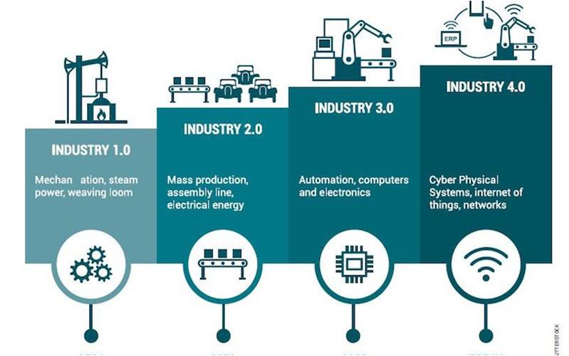

Existing Vibration Alarm Standards only deal with “Overall Vibration”.

Back in the days it was fine, but then, there was no spectra, only overall.

With the usefulness of the vibration spectrum, overall alarms are no longer valid. Spectra have thousands of points. The overall can’t cover all of them. Old standards are no longer valid.